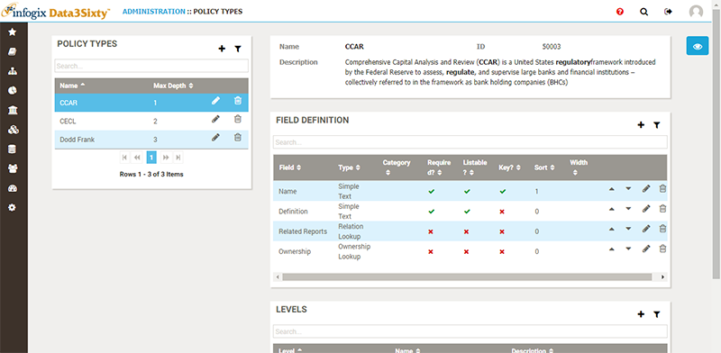
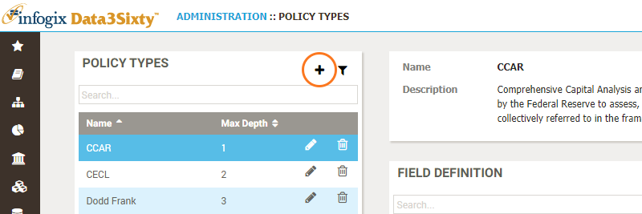
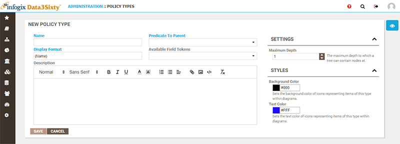
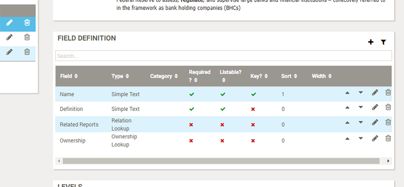
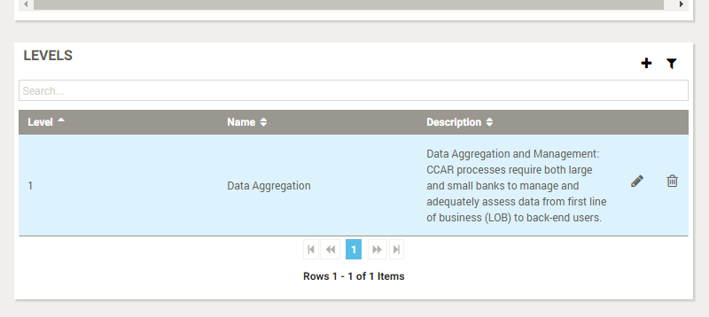

|
|
Establishing policies
Note: If you are not already familiar with policies you should first check out the User Guide topics Introduction to assets and Policies.
It is the responsibility of the system administrator to define and maintain a set of top-level policies, in order to enable Data Steward and Business Owner users to build out hierarchical policy models to capture how artifacts should be governed.
Browsing policies
Choose Administration > MetaModel > Policies to view a list of existing top-level policy models, with details for the selected item shown on the right:

Creating policies
You can click the Add button to create a new top-level policy:

The New Policy Type panel appears:

Along with name and description, the following Settings are available:
- Maximum Depth: Determines the maximum depth of nested child policy assets
- Background Color: This is the color of the box used in lineage diagrams.
- Text Color: This is the color of the text used in lineage diagrams.
Field definition
For the selected model, the Field Definition table on the right is available to determine which fields should be displayed and populated for this policy, or a child of this policy:

Please refer to the following topic Defining fields on asset types, for full details on editing the fields associated with an asset.
Levels
For the selected policy, the Levels table on the right can be used to optionally provide a name and description for each level of the policy model:

Responsibility type assignment
You can manage permissions on asset types via Responsibility Types. Please refer to the topic Establishing responsibilities for more details.